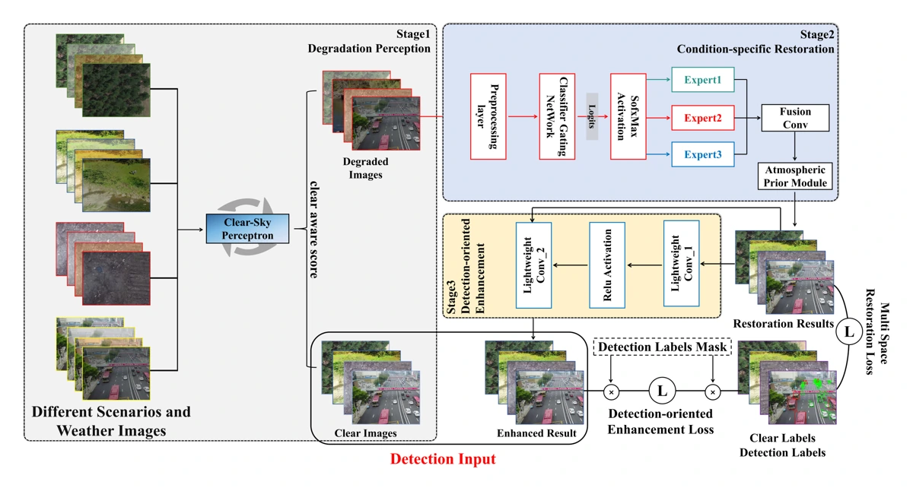
View full-size figure ↗点击查看论文大图 ↗Bridging the domain gap: A transferable dynamic routing enhancer for robust aerial detection under adverse weather
ISPRS Journal of Photogrammetry and Remote Sensing 242, 1-18 , 2026
👋 Hi there! I am Yu Wan (万宇), currently pursuing a Ph.D. at the School of Geodesy and Geomatics, Wuhan University, under the supervision of Qiangqiang Yuan and Jie Li. My research focuses on remote sensing and object detection, especially robust aerial perception under adverse weather.
👋 大家好！我是万宇（Yu Wan），目前在武汉大学测绘学院攻读博士学位，由袁强强和李杰指导。我的研究聚焦遥感与目标检测，尤其关注复杂天气条件下的鲁棒航拍视觉感知。
🎓 I received my bachelor's degree from the School of Geological Engineering and Geomatics, Chang'an University, and my master's degree from the School of Geodesy and Geomatics, Wuhan University.
🎓 我本科毕业于长安大学地质工程与测绘学院，硕士毕业于武汉大学测绘学院。
🔍 My research interests include:🔍 我的研究方向包括：
🤝 I welcome research discussions and collaboration. Feel free to contact me at 2024282140091@whu.edu.cn!
🤝 欢迎科研合作与交流！您可以通过邮箱 2024282140091@whu.edu.cn 与我联系。

View full-size figure ↗点击查看论文大图 ↗ISPRS Journal of Photogrammetry and Remote Sensing 242, 1-18 , 2026
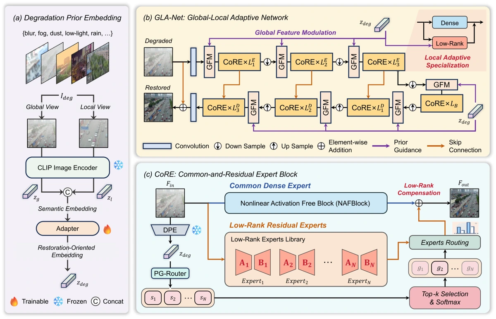
View full-size figure ↗点击查看论文大图 ↗ISPRS Journal of Photogrammetry and Remote Sensing 240, 410-429 , 2026
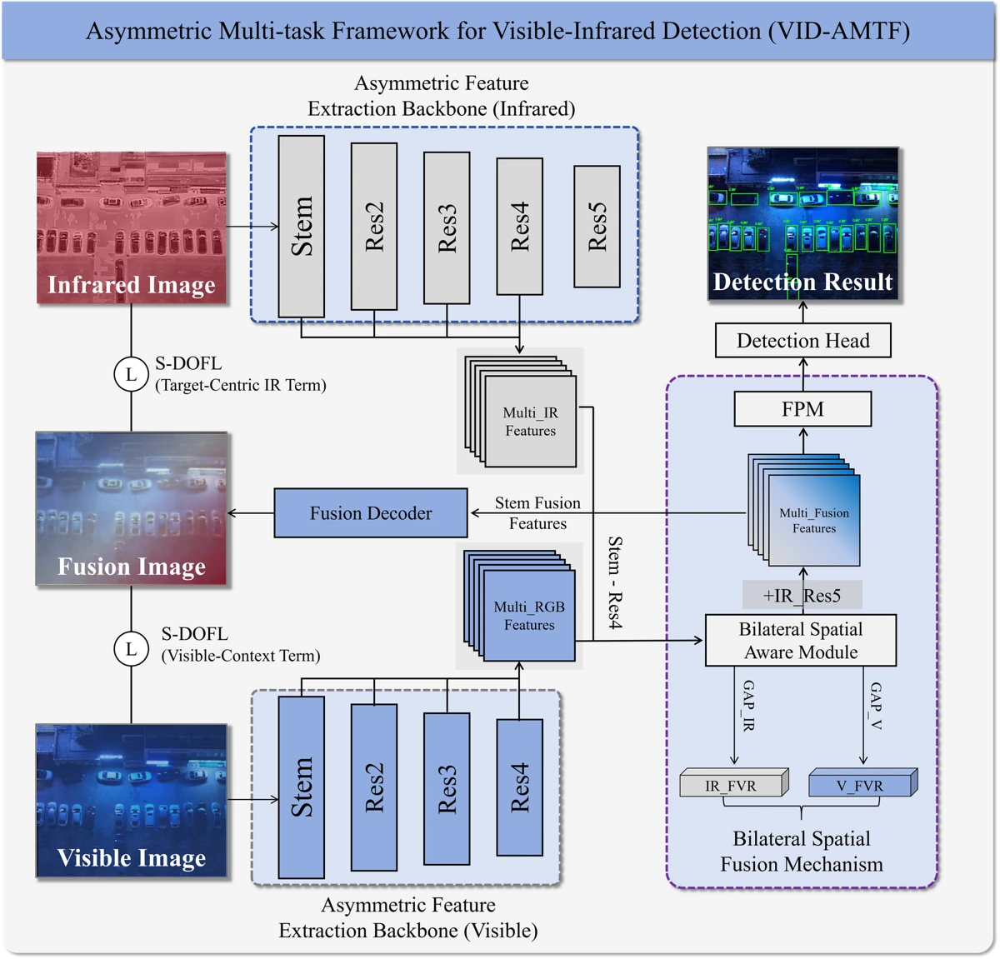
View full-size figure ↗点击查看论文大图 ↗IEEE Transactions on Geoscience and Remote Sensing, Early Access, 2026
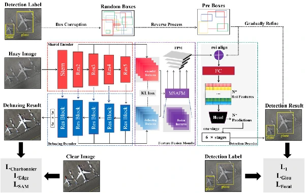
View full-size figure ↗点击查看论文大图 ↗IEEE Transactions on Geoscience and Remote Sensing 63, 1-13 , 2025
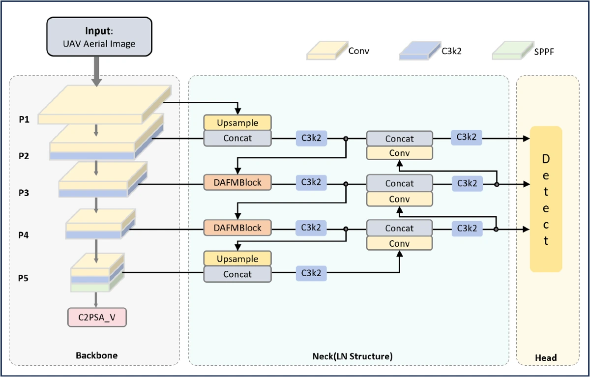
View full-size figure ↗点击查看论文大图 ↗IEEE Journal of Selected Topics in Applied Earth Observations and Remote Sensing , 2026
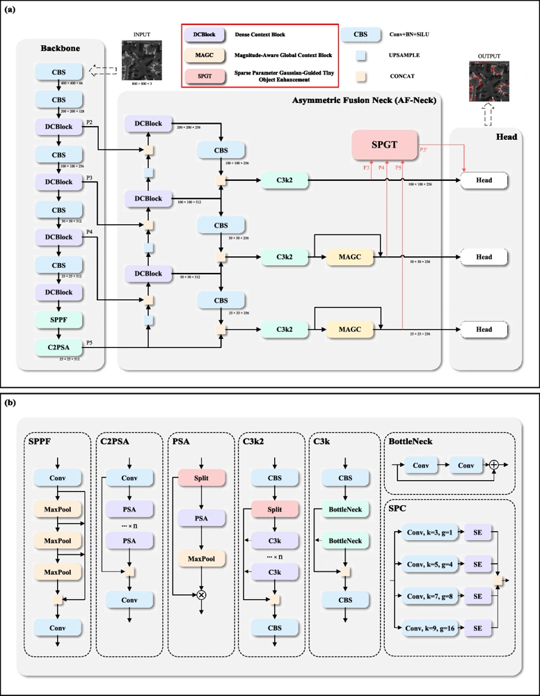
View full-size figure ↗点击查看论文大图 ↗IEEE Journal of Selected Topics in Applied Earth Observations and Remote Sensing , 2026
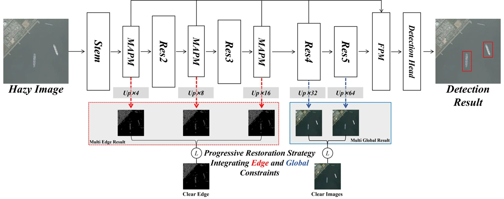
View full-size figure ↗点击查看论文大图 ↗IEEE Signal Processing Letters , 2026
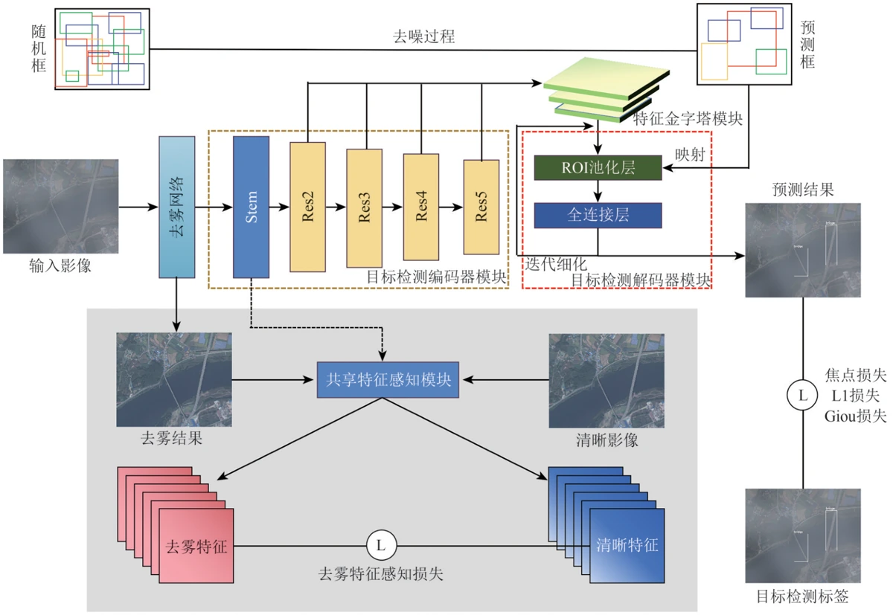
View full-size figure ↗点击查看论文大图 ↗Journal of Geodesy & Geoinformation Science 8 (4), 56 , 2025
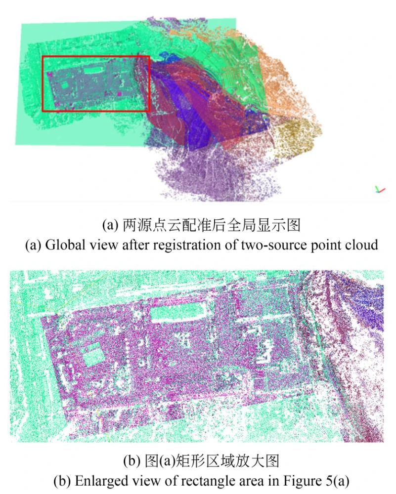
View full-size figure ↗点击查看论文大图 ↗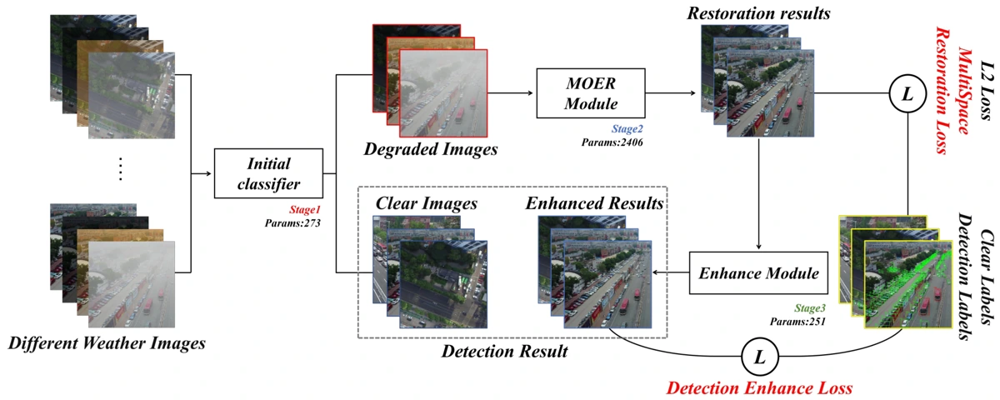
View full-size figure ↗点击查看论文大图 ↗ISPRS Annals of the Photogrammetry, Remote Sensing and Spatial Information … , 2026
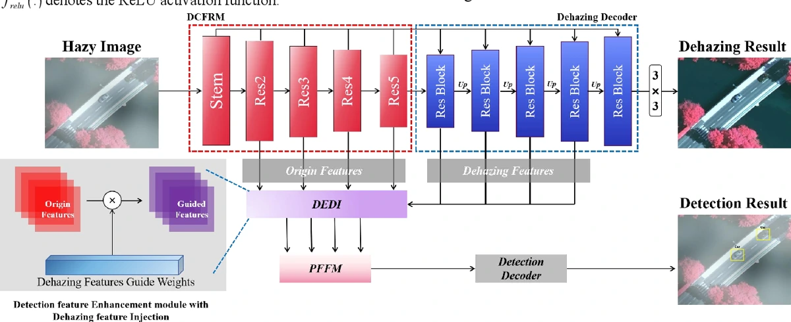
View full-size figure ↗点击查看论文大图 ↗IGARSS 2025-2025 IEEE International Geoscience and Remote Sensing Symposium … , 2025
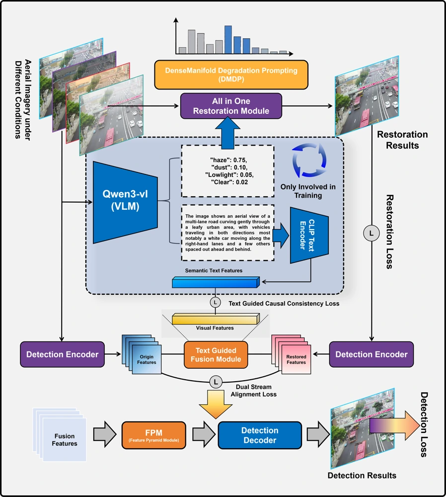
View full-size figure ↗点击查看论文大图 ↗No publications match your search.没有符合条件的论文。
A transferable dynamic routing enhancer for robust aerial detection under adverse weather.
面向复杂天气航拍检测的可迁移动态路由增强器。
Code & pretrained model代码与预训练模型Degradation-semantic fusion for weather-invariant aerial detection, with text-free inference.
融合退化与语义信息，实现天气鲁棒的航拍目标检测，推理阶段无需文本输入。
Project & dataset · code forthcoming项目与数据集 · 代码逐步开放An asymmetric multi-task framework for visible-infrared object detection.
面向可见光与红外目标检测的非对称多任务框架。
Code & pretrained model代码与预训练模型For research discussions and collaboration, please email 欢迎交流与合作，联系邮箱：2024282140091@whu.edu.cn。
Thank you for visiting!感谢你的来访！
Powered by VisitorTrace ↗